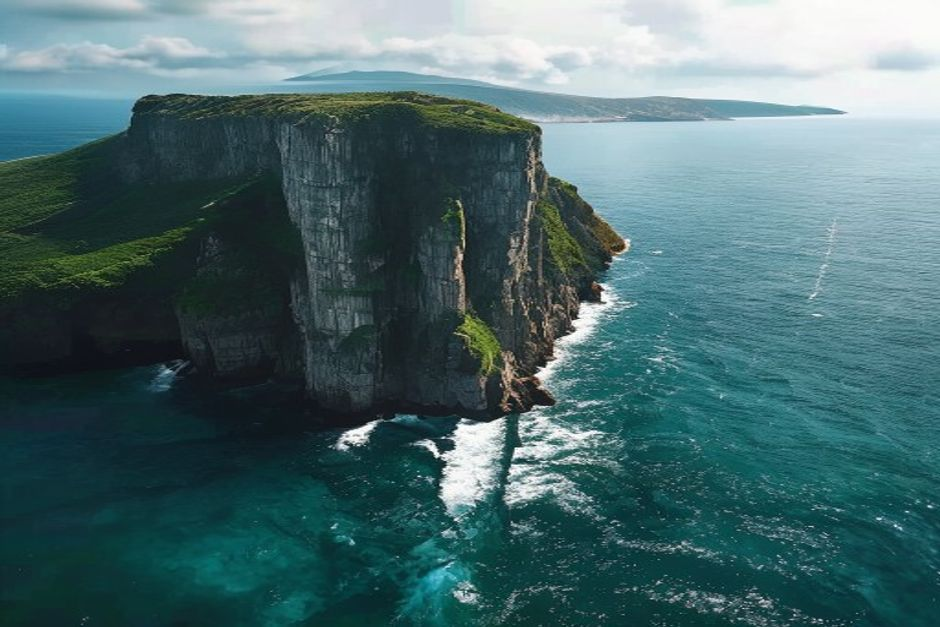
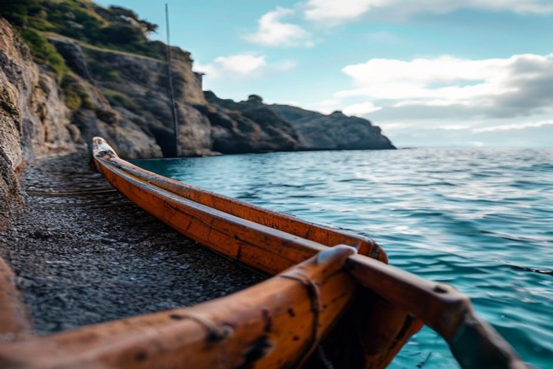

Cabo Girão est un mur de roche volcanique de 580 mètres qui plonge tout droit dans l'Atlantique, et il ne prend tout son sens que lorsqu'on flotte à sa base, le regard levé. La célèbre passerelle en verre montre le vide ; l'eau montre la falaise.
Quelle est la hauteur du Cabo Girão, et pourquoi cela change-t-il tout depuis un bateau ?
Le Cabo Girão s'élève à environ 580 mètres au-dessus de la mer, ce qui en fait l'une des plus hautes falaises maritimes d'Europe. Depuis la terre, ce chiffre reste abstrait — on regarde vers le bas, des terres agricoles et l'eau, depuis une plateforme. Depuis un petit bateau qui se maintient à la base, ce n'est plus un chiffre : c'est une présence physique, un mur de basalte vertical et strié qui masque un tiers du ciel. La plupart des visiteurs sous-estiment l'échelle jusqu'à ce qu'ils se retrouvent en dessous.

La passerelle vaut-elle le détour, ou faut-il aller directement sur l'eau ?
La passerelle vaut le détour si vous cherchez le vertige de regarder droit vers le bas — c'est une plateforme en verre gratuite à Câmara de Lobos, construite en surplomb, et ce sont cinq minutes vraiment saisissantes. Mais elle ne montre qu'une chose : le vide. Elle ne montre pas la falaise elle-même, sa texture, ni la façon dont ses strates volcaniques accrochent la lumière. Pour cela, il faut être sur l'eau et regarder vers le haut, pas en haut à regarder vers le bas. Idéalement, faites les deux — la passerelle le matin, le bateau l'après-midi.
Que voit-on depuis un bateau que l'on ne voit pas depuis le sommet ?
Depuis le niveau de la mer, la structure en couches de la falaise devient lisible — des bandes de roche volcanique plus sombres et plus claires, empilées sur des centaines de milliers d'années, avec de petits replats de verdure accrochés aux fissures du basalte. On aperçoit aussi ce qui se cache en dessous : Fajã dos Padres, une étroite bande de terrasses de bananiers et de vignes au pied de la falaise, accessible uniquement par téléphérique ou par la mer. Voir ce lopin de terre agricole coincé entre un mur de 580 mètres et l'océan en dit plus long sur la façon dont les gens ont travaillé ce littoral qu'aucun point de vue depuis le sommet ne pourra jamais le faire.
Comment les bateaux rejoignent-ils le Cabo Girão depuis Funchal ?
C'est une courte traversée le long de la côte — environ 20 à 30 minutes vers l'ouest depuis Marina do Funchal, en passant par Câmara de Lobos, avant que la falaise n'apparaisse. Une sortie en bateau privé avec Chifbay associe généralement le Cabo Girão aux criques cachées plus loin sur la côte, si bien que la falaise devient une étape parmi d'autres plutôt que l'intégralité de la sortie — ce qui lui convient bien, car la plupart des gens préfèrent quinze ou vingt minutes à la base plutôt qu'un après-midi entier à contempler la roche.
Quel est le meilleur moment de la journée pour la voir depuis la mer ?
La fin d'après-midi est le créneau le plus favorable. Le soleil bas et incliné rase la paroi et fait ressortir ses crêtes et ses strates bien mieux que la lumière plate de midi, quand le mur peut sembler n'être qu'une masse sombre uniforme. La mer a aussi tendance à être plus calme en début d'après-midi, avant que le vent qui se lève parfois sur la côte ouest en fin de journée ne s'installe — à prendre en compte si vous êtes sujet au mal de mer.
Est-il sûr de s'approcher en bateau d'une falaise de cette taille ?
Oui, dans les conditions où les bateaux naviguent habituellement. Des skippers expérimentés lisent la houle et gardent une distance de travail raisonnable par rapport à la base, assez proche pour que l'échelle se révèle sans jamais s'approcher d'une zone de chute de pierres. Le Cabo Girão est une formation stable, érodée depuis très longtemps, et non un danger actif — la prudence appliquée relève de la navigation côtière courante, pas d'un risque particulier propre à cette falaise.

On peut photographier le Cabo Girão depuis le sommet. On ne peut le comprendre que depuis le bas.
Si vous n'avez le temps de voir le Cabo Girão qu'une seule fois, voyez-le depuis l'eau. La passerelle vous offre une belle photo ; le bateau vous montre la vraie taille de la chose.